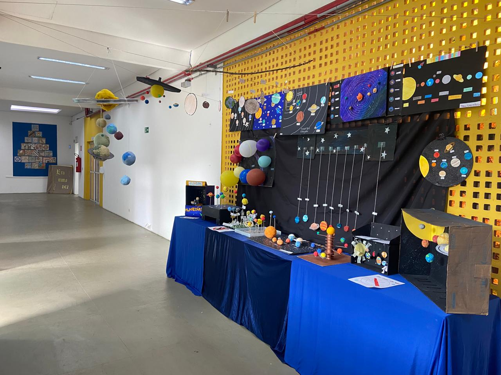
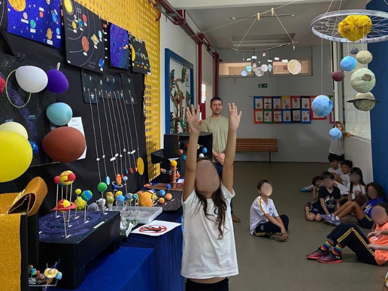
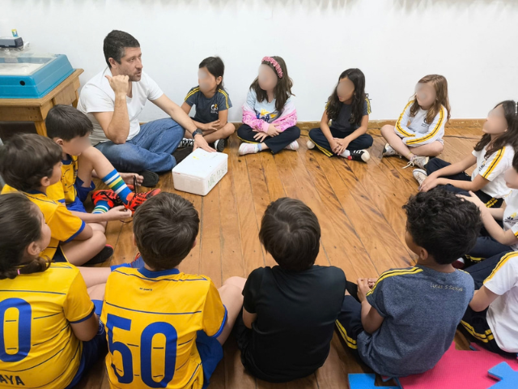
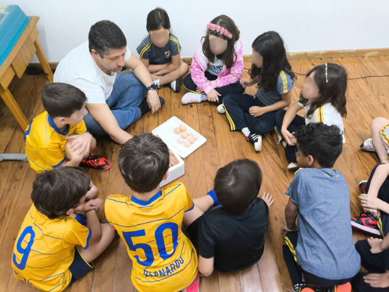

Ensino Fundamental I - 1º ao 5º ano
A aprendizagem acontece por meio de projetos investigativos, experimentação e diálogo — sempre com o olhar atento ao percurso de cada aluno.
Os alunos pesquisam, discutem, registram e apresentam suas descobertas em projetos investigativos que dão sentido real ao que aprendem.
Cada aluno é visto como capaz de investigar, formular hipóteses, criar e construir conhecimento na relação com os outros e com o mundo.
Mais de 10 mil m² de área verde, com horta, animais e espaços ao ar livre que se conectam ao que se investiga em sala de aula.
O aluno aprende com o corpo, as mãos, a voz, o traço, o movimento. Valorizamos a palavra, o desenho, a música, a dança, a construção, a arte e a ciência.
Três palavras que exigem presença constante e sensibilidade. Na EGV, todo aluno sabe que pode procurar a escola e será ouvido — seus sentimentos importam.
Pedagogia corporal que desenvolve consciência corporal, concentração e equilíbrio emocional — aspectos que apoiam diretamente o processo de alfabetização.
No Fundamental I, os alunos não têm aulas "de" inglês, e sim "em" inglês: o idioma é vivido nos projetos e no cotidiano escolar até o 6º ano.
Acompanhamos de perto o percurso de cada aluno com indicadores que orientam a prática pedagógica com precisão e cuidado individual.
Pesquisar, criar, se expressar e descobrir o mundo pelas múltiplas linguagens — o dia a dia dos alunos na EGV.




Famílias que confiam na EGV há anos em suas próprias palavras.
Na EGV, sinto que meus filhos não são apenas um número. Eles são conhecidos e cuidados por todos os colaboradores e professores. Isso sem falar na paixão que eles tem pela escola sentem falta das aulas até nas férias!
Tudo que os pais mais querem saber antes de visitar a escola.
As vagas do Ensino Fundamental I são limitadas. Fale com a gente e encontre o melhor momento para visitar a escola.